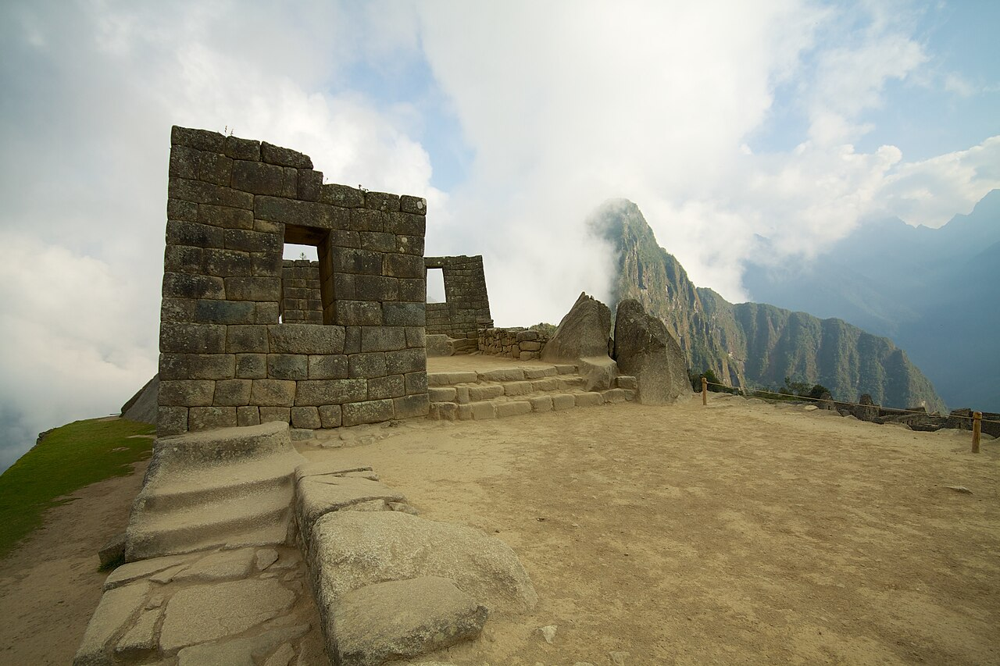
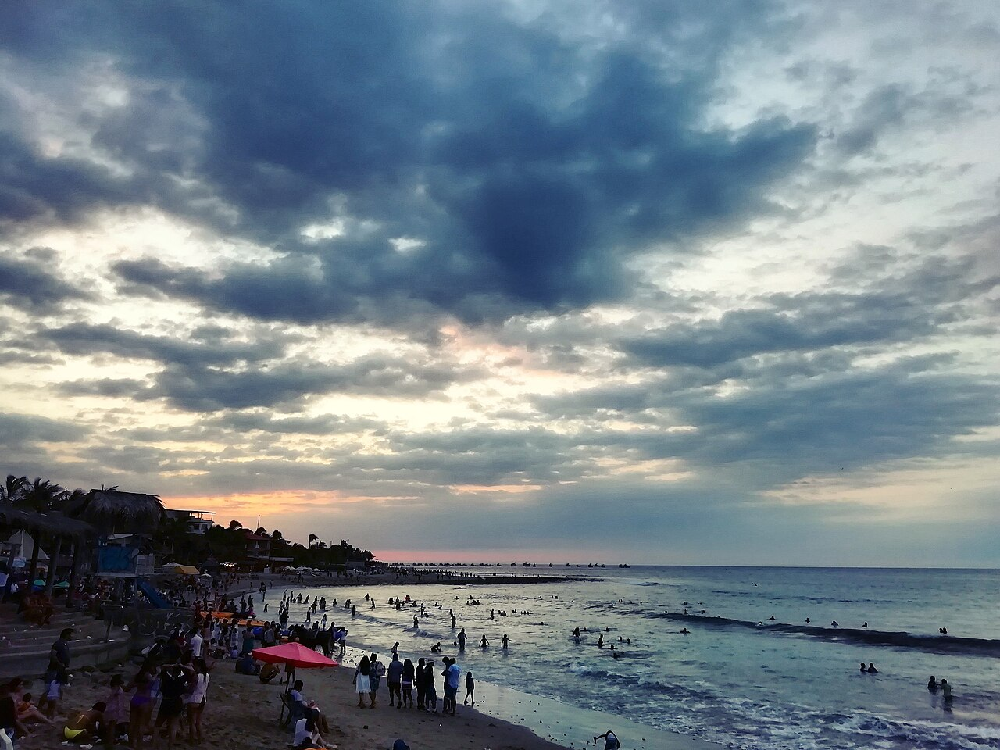
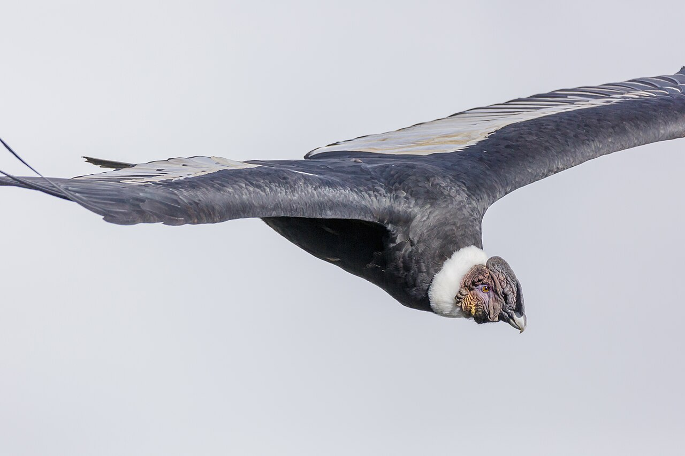
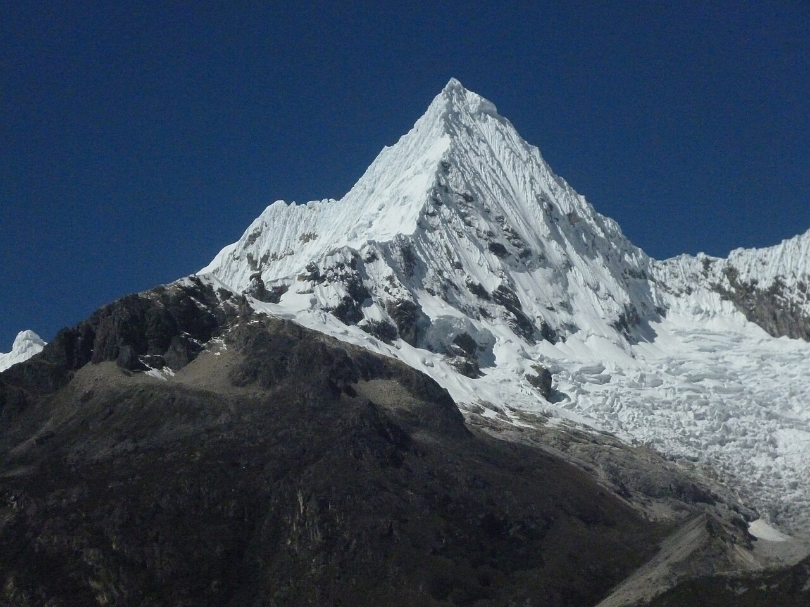

CuscoMachu Picchu
Patrimonio de la Humanidad
UTP · AVA · Práctica calificada N°3
Cuatro ejercicios de CSS avanzado: transiciones, transformaciones, animaciones autónomas y CSS moderno con fallbacks. Usa el menú de la izquierda para navegar entre ellos.
Pregunta 1 · 5 puntos
Interfaz de contacto para un estudio creativo. La navegación, los campos del formulario y el botón responden al usuario con transiciones suaves de color, movimiento y sombra.
Diseño de interfaces, identidad visual y experiencias web para marcas que quieren destacar.
Pregunta 2 · 5 puntos
Catálogo de destinos turísticos del Perú. Al interactuar, las tarjetas se inclinan en 3D, la imagen amplía, la etiqueta rota y la descripción emerge usando transformaciones.

CuscoPatrimonio de la Humanidad
Arquitectura colonial

PiuraCosta norte del Perú
Puerta de la Amazonía

ArequipaRuta del cóndor andino

ÁncashAventura de altura
Pregunta 3 · 5 puntos
Un paisaje que recorre un ciclo completo día → atardecer → noche → amanecer, hecho solo con formas y animaciones CSS: el sol se oculta tras las montañas, salen la luna y las estrellas, cruza una estrella fugaz, aparecen luciérnagas sobre el lago y no dejan de moverse las nubes, las aves y los globos aerostáticos.
Un único reloj de 26 s sincroniza todo: skyDusk y skyNight (cielo), sunMove, moonRise, starsFade, shoot (estrella fugaz), drift (nubes), cross + floaty (globos), tide (ondas del lago), wander (luciérnagas) y birdsCross.
Pregunta 4 · 5 puntos
Tarjeta de perfil con efecto de vidrio sobre un fondo vibrante. Incluye @supports con alternativa funcional, fallbacks (color-mix), prefijos de proveedor ordenados, bloque prefers-reduced-motion y pruebas en dos navegadores.
Estudiante · Ing. de Sistemas
backdrop-filter la tarjeta usa un fondo sólido legible; con soporte, se aplica el vidrio difuminado.-webkit-backdrop-filter y al final el estándar backdrop-filter.color-mix(); si el navegador no lo soporta, conserva el color base.@media (prefers-reduced-motion: reduce) que desactiva animaciones y transiciones en toda la página. Si tu equipo lo tiene activo, el aviso inferior permite reactivarlas.| Navegador (Windows 11) | backdrop-filter | color-mix() | Qué se ve igual / qué cambia |
|---|---|---|---|
| Chrome 120 | Sí | Sí | Idéntico: vidrio difuminado con saturación y botón con color mezclado. |
| Firefox 121 | Sí | Sí | Idéntico al de Chrome. |
| Edge 120 | Sí | Sí | Idéntico (mismo motor Chromium). |
| Sin soporte (Firefox ≤ 102, navegadores antiguos) | No | No | Cambia: la tarjeta muestra fondo sólido oscuro y el botón un color fijo; todo sigue legible y funcional. |
Fuentes: caniuse.com · backdrop-filter · caniuse.com · color-mix() · MDN · backdrop-filter